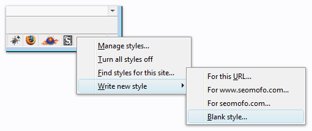

UPDATE 3/19/2012: I have created a new resource for this. The new version also allows you to identify JavaScript links and links with rel="external" attributes. Check it out: custom cursors for SEO.
One of the most important skills an advanced SEO must possess is the ability to analyze and understand the link structure of a given web page or website. This skill can be applied to many different SEO-related topics, such as information architecture, link building, and the mysterious practice of PageRank sculpting. Even “content is king” advocates rely on links to deliver traffic, increase rankings, and to make their content discoverable to search engine crawlers.
Anyone who’s serious about SEO needs to be able to easily identify links that (a) cannot be crawled, or (b) cannot flow PageRank. Two common examples of this are:
- links that include the
rel="nofollow"attribute - links that are embedded in a page via inline frames (i.e.
<iframe>elements)
In this article, I will show you how I have customized my web browser (Firefox 3.5) to help me identify nofollowed links and iframes, without viewing a page’s HTML source code. If you don’t use Firefox, you can still benefit from the CSS examples in this post, but you will have to figure out how to add custom user-defined CSS styles to your browser. If you’re using Internet Explorer, just kill yourself.
Step 1: Install the Stylish Extension for Firefox or Chrome
Stylish is a simple Firefox extension that allows you to add custom CSS styles to your browser. In other words, it lets you override the author-defined styles on any website. There are other extensions out there that provide similar functionality, but Stylish seems to be the easiest and most popular. Plus, it’s what I use…and I’m the greatest SEO who’s ever lived. Install it from the official Stylish Firefox Add-ons page or the Stylish Chrome Web Store page.
Step 2: Create a New Style
After you install Stylish and restart Firefox, you should see the Stylish icon in the bottom-right corner of your browser. If you don’t see it, try clicking View => Toolbars => Customize, and then add the icon to your toolbar. The icon is a box with an “S” on it. Once you’ve found the icon and opened the Stylish menu, click on Write new style => Blank style.

Step 3: Pimp Your nofollow Attributes
Now it’s up to you to add your own custom CSS styles to make nofollowed links stand out in your browser. Here are some tips to get you started:
- Remember to add
!importantafter every style declaration (but before the semicolon). Example:.black{color:#000 !important;} - Take advantage of the powerful CSS 2.1 selector syntax, which enables you to select elements based on their attributes. To select all links with the
nofollowattribute, you would usea[rel~="nofollow"]{...} - If you’re the adventurous type, check out the CSS 3 selectors (not an official W3C Recommendation yet). Remember that you aren’t limited to cross-browser compatible CSS–you can use anything that your specific browser accepts.
- For more information about using Stylish, see Coding User Styles.
The possibilities are endless, but try the code example below and take it from there. This example will achieve the following results:
- Text nofollow links have a strikethrough in their anchor text.
- When you hover over text nofollow links, they turn red (and remove the strikethrough).
- Image nofollow links and iframe elements have a red border when you hover over them.
a[rel~="nofollow"]{
text-decoration:line-through !important;
}
a:hover[rel~="nofollow"]{
color:#F00 !important;
text-decoration:inherit !important;
}
a:hover[rel~="nofollow"] img,
iframe:hover{
outline-width:1px !important;
outline-offset:-1px !important;
outline-color:#F00 !important;
outline-style:solid !important;
}
NOTE: If you’re wondering about these strange outline properties, they’re from the CSS3 Candidate Recommendation. They all work in Firefox 3.5. The difference between outline and border is that border adds to the width of a box, but outline doesn’t. The outline-offset declaration is set such that the red border falls on the inside of the box being outlined. In other words, using these declarations instead of border declarations should prevent you from unintentionally shifting the layout of the page you’re viewing.
If you have any SEO-related custom style declarations to add, feel free to leave a comment.